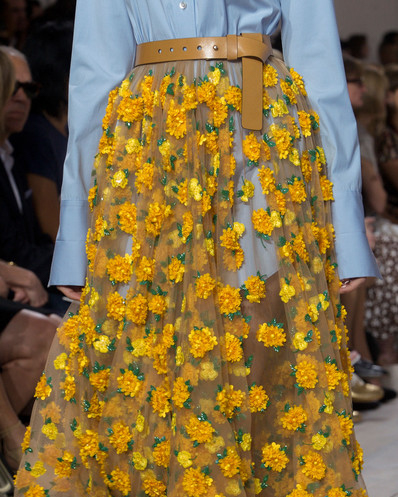
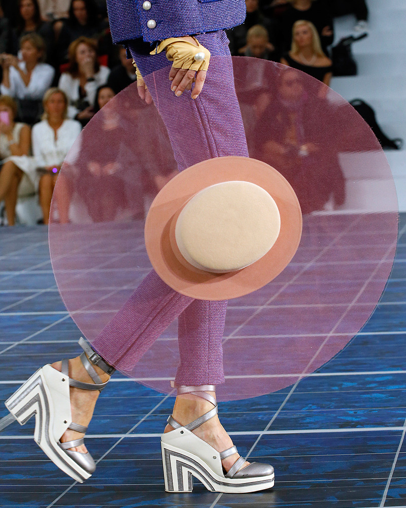

Runway

Ulla Johnson / Spring 2020

Michael Kors / Spring 2015

Chanel / Paris Fashion Week 2013
about
In runway fashion shows, brands and designers will showcase their most recent collections prior
to their release. In this way, viewers can gain insight to up and coming trends. Most shows occur semiannually,
during either the fall/winter season or the spring/summer season. New York Fashion Week and Paris Fashion Week make
up
the biggest events, but London and Milan serve as major locations for runway shows as well.